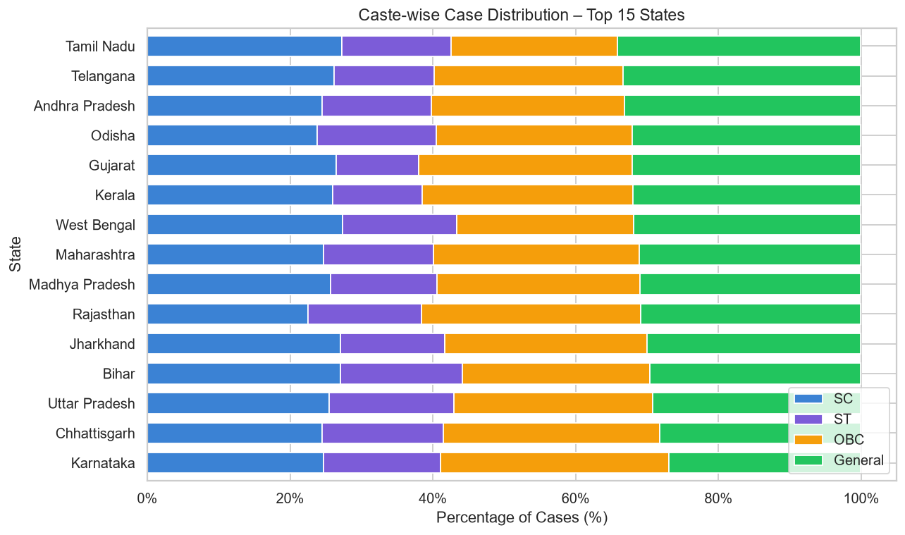
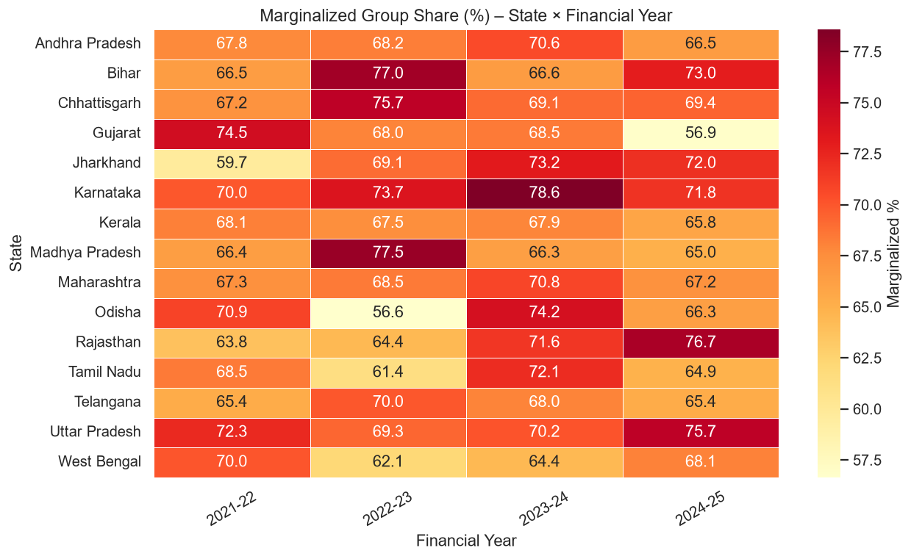
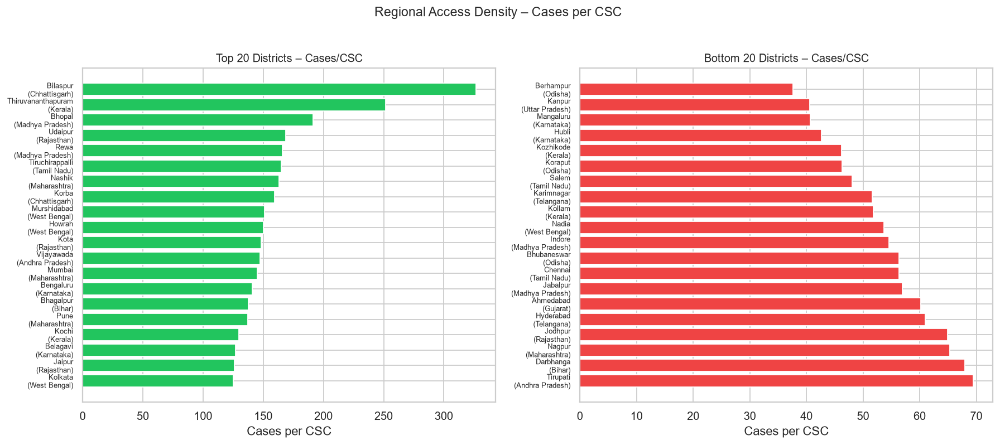
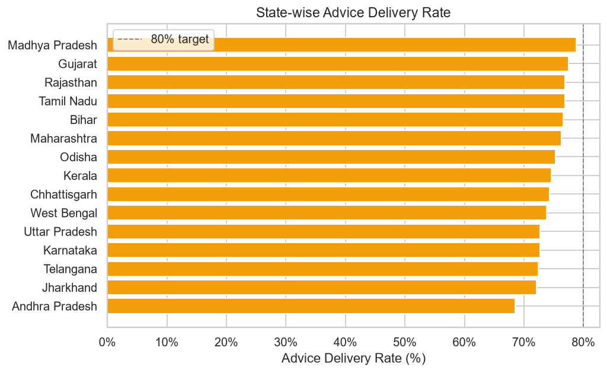
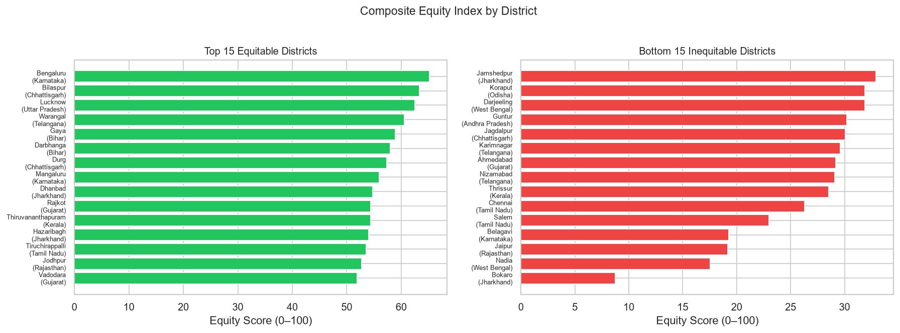

🤖 IBM Granite Insight: [IBM Granite not configured – 404 Client Error: Not Found for url: https://us-south.ml.cloud.ibm.com/ml/v1/text/generation?version=2023-05-29]
2. Caste-wise / Marginalization Analysis


National marginalized share: 69.01% (SC 25.48% · ST 15.41% · OBC 28.12%). Gini coefficient: 0.0923.
🤖 IBM Granite Insight: [IBM Granite not configured – 404 Client Error: Not Found for url: https://us-south.ml.cloud.ibm.com/ml/v1/text/generation?version=2023-05-29]
3. Geographic / Regional Disparity


🤖 IBM Granite Insight: [IBM Granite not configured – 404 Client Error: Not Found for url: https://us-south.ml.cloud.ibm.com/ml/v1/text/generation?version=2023-05-29]
4. Composite Equity Index

The Equity Index (0–100) combines marginalized group share (35%), female participation (25%), advice delivery rate (25%), and CSC access density (15%).